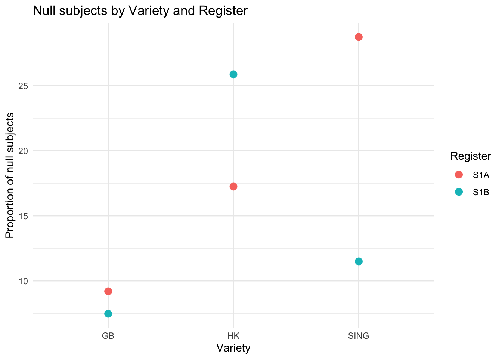
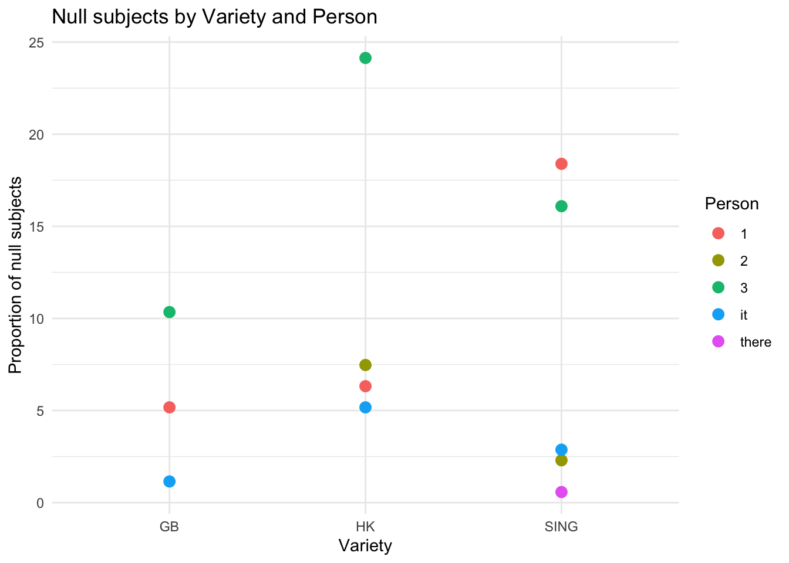
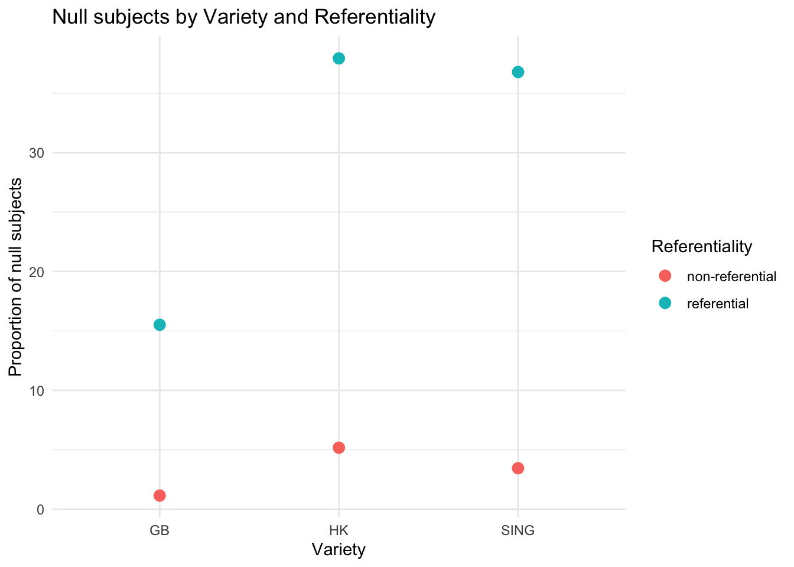
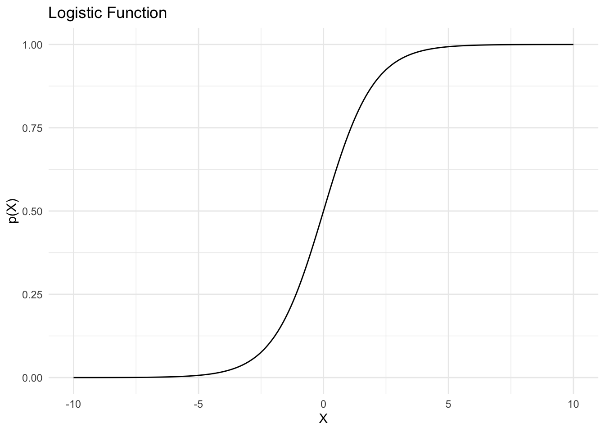
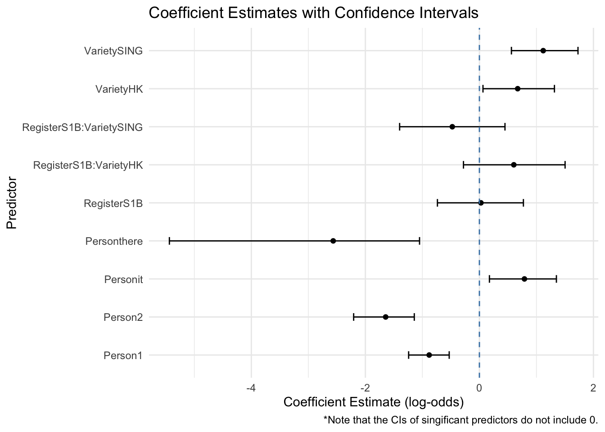
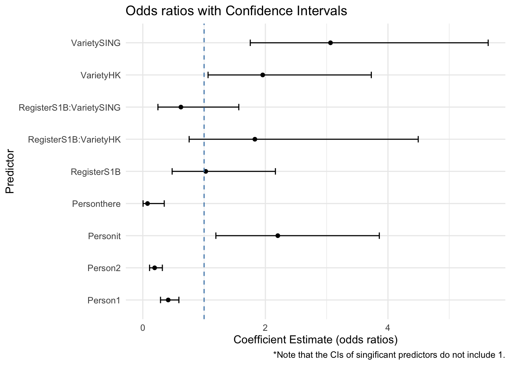
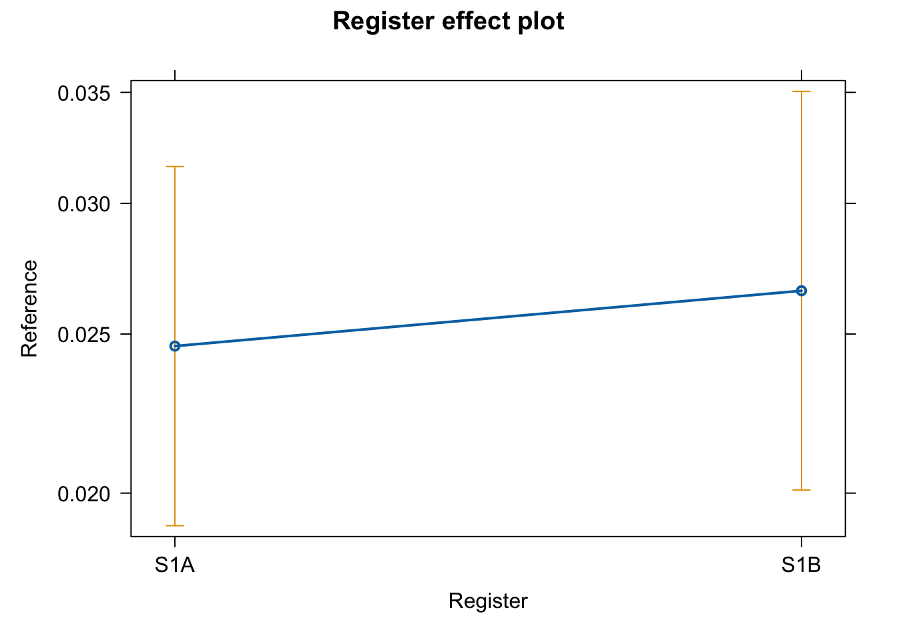
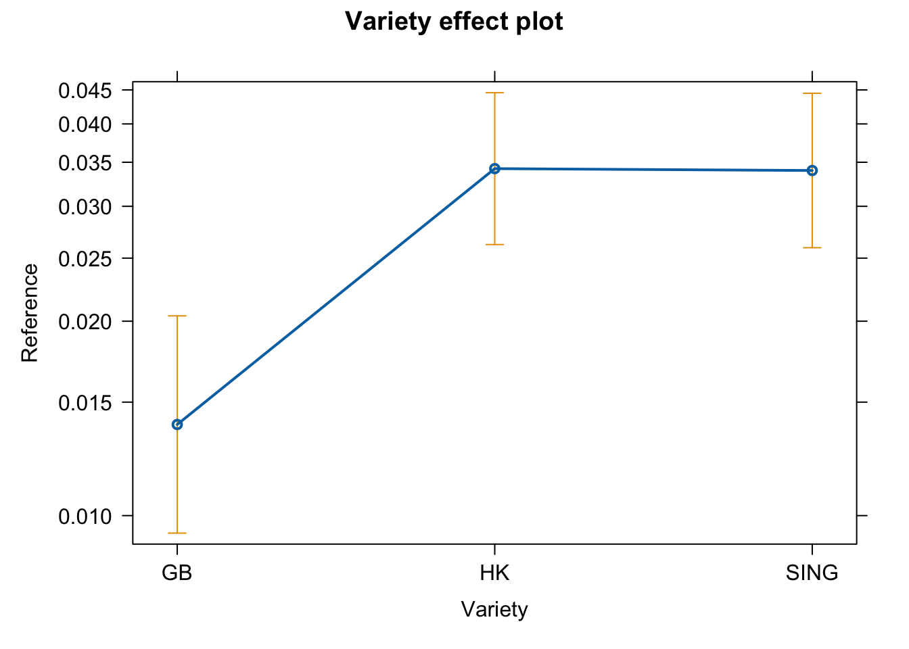
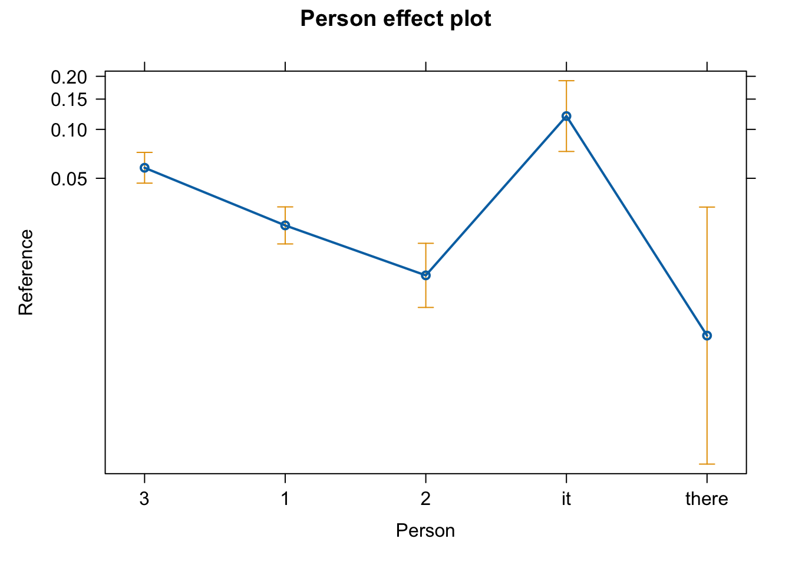
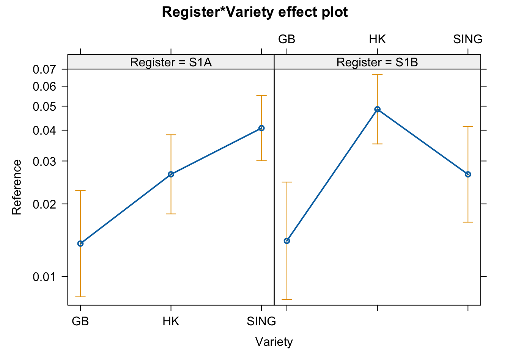

# Load libraries
library("tidyverse")
library("rms") # For regression modelling
# Load data
data_pro <- read_csv("data/Buskin_pronoun_data.csv", sep = ",", header = TRUE)12 Logistic Regression
This unit is based on James et al. (2021: Chapter 4) and Levshina (2015: Chapter 12). For an in-depth introduction, see Hosmer & Lemeshow (2008).
12.1 Preparation
Consider the data from Buskin’s (n.d.) corpus-study on subject pronoun realisation:
Target variable:
Reference(‘overt’, ‘null’)
Explanatory variables:
Person(‘1.p.’, ‘2.p’, ‘3.p’ as well as the dummy pronouns ‘it’ and ‘there’)Register(the text category in the International Corpus of English; ‘S1A’ are informal conversations, whereas ‘S1B’ comprises formal class lessons)Variety(British English ‘GB’, Singapore English ‘SING’ and Hong Kong English ‘HK’) andReferentiality(‘referential’ with an identifiable referent or ‘non-referential’ with no/generic reference)
head(data_pro) Reference Person Register Variety Referentiality
1 overt 3 S1A GB referential
2 overt 3 S1A GB referential
3 overt 3 S1A GB referential
4 overt 3 S1A GB referential
5 overt 3 S1A GB referential
6 overt 3 S1A GB referentialtable(data_pro$Reference)
null overt
174 4664 12.1.1 Descriptive overview
Code
# Raw data for Ref x Reg x Var
data_pro %>%
count(Reference, Register, Variety) %>%
filter(Reference == "null") %>%
mutate(pct = n/sum(n) * 100) -> pro_stats1
# Raw data for Ref x Per x Var
data_pro %>%
count(Reference, Person, Variety) %>%
filter(Reference == "null") %>%
mutate(pct = n/sum(n) * 100) -> pro_stats2
# Raw data for Ref x Referent. x Var
data_pro %>%
count(Reference, Referentiality, Variety) %>%
filter(Reference == "null") %>%
mutate(pct = n/sum(n) * 100) -> pro_stats3
# Plot 1
pro_stats1 %>%
ggplot(aes(x = Variety, y = pct, color = Register)) +
geom_point(size = 3) +
theme_minimal() +
labs(
title = "Null subjects by Variety and Register",
y = "Proportion of null subjects"
)
Code
# Plot 2
pro_stats2 %>%
ggplot(aes(x = Variety, y = pct, color = Person)) +
geom_point(size = 3) +
theme_minimal() +
labs(
title = "Null subjects by Variety and Person",
y = "Proportion of null subjects"
)
Code
# Plot 3
pro_stats3 %>%
ggplot(aes(x = Variety, y = pct, color = Referentiality)) +
geom_point(size = 3) +
theme_minimal() +
labs(
title = "Null subjects by Variety and Referentiality",
y = "Proportion of null subjects"
)
12.2 Logistic regression
In contrast to linear regression, logistic regression models a qualitative response variable \(Y\) (here:
Reference) with two outcomes as a function of the independent variables \(X_p\) (Register, Variety etc.). The goal is to predict a value for \(Y\).For a given observation, the model should predict either a specific category of \(Y\) (e.g.,
Reference = overtorReference = null) or provide a probability estimation of a particular outcome (e.g., the probability ofReference = null).The probability that
Reference = nullgiven a predictor (e.g.,Register) can be written as \(P(\text{Reference} = \text{null} \mid \text{Register})\) or more simply as \(p(\text{Register})\).A core component of logistic regression is the logistic function. The rationale for using it is that the output of the function will always lie between \(0\) and \(1\), and it will always denote a probability.

12.2.1 The logistic model
Assuming a binary response variable \(Y\) with the values 1 and 0 and a single predictor \(X\), we can model the probability \(P(Y = 1\vert X) = p(X)\) as
\[ p(X) = \frac{e^{\beta_0 + \beta_1X}}{1 + e^{\beta_0 + \beta_1X}}. \]
Note that \(e \approx 2.71828\). This expression is equivalent to
\[ \log\left(\frac{p(X)}{1-p(X)}\right) = \beta_0 + \beta_1X. \]
The fraction \(\frac{p(X)}{1-p(X)}\) represents the odds, which stand for to the probability of one outcome (e.g., Reference = null) compared to the other (e.g., Reference = overt). Their logarithmic transformation are the log odds (or logits) of a model. When interpreting the output of a logistic model, note that
positive log odds indicate an increase in \(p(X)\), whereas
negative log odds indicate a decrease in \(p(X)\).
If \(X = \text{Register}\), then our model has the form:
\[ \log\left(\frac{P(\text{Reference} = \text{null} \mid \text{Register})}{1- P(\text{Reference} = \text{null} \mid \text{Register})}\right) = \beta_0 + \beta_1\text{Register} \]
12.2.2 Multiple logistic regression
If more than one predictor is included, the above equations can be expanded so as to take into account \(p\) slopes \(\beta_p\) for \(p\) independent variables \(X_p\).
\[ p(X) = \frac{e^{\beta_0 + \beta_1X_1 + ... + \beta_pX_p}}{1 + e^{\beta_0 + \beta_1X_1 + ... + \beta_pX_p}}. \] Thus, the log odds correspond to the sum of \(\beta_pX_p\),
\[ \begin{aligned} \log\left(\frac{p(X)}{1-p(X)}\right) &= \beta_0 + \beta_1X_1 + ... + \beta_pX_p \\ & = \beta_0 + \sum_{i=1}^{p} \beta_i X_i \end{aligned} \] respectively.
12.2.3 Odds ratios
To assess the strength of an effect, it is instructive to examine the odds ratios that correspond to the model coefficients. Odds ratios (OR) are defined as
\[ OR(X_1) = e^{\beta_1}. \]
Essentially, the OR describes the ratio between two odds with respect to another independent variable. This is illustrated for Reference given Register below:
\[ \text{OR}(\text{Reference} \mid \text{Register}) = \frac{\frac{P(\text{Reference} = \text{null} \mid \text{Register} = \text{S1A})}{P(\text{Reference} = \text{overt} \mid \text{Register} = \text{S1A})}}{\frac{P(\text{Reference} = \text{null} \mid \text{Register} = \text{S1B})}{P(\text{Reference} = \text{overt} \mid \text{Register} = \text{S1B})}} \] Read as: ‘The ratio between the probability of a null vs. overt object in S1A and the probability of a null vs. overt object in S1B’.
12.3 Workflow in R
12.3.1 Step 1: Research question and hypotheses
How do the intra- and extra-linguistic variables suggested in the literature affect subject pronoun realisation (Definite Null Instantiation) in British English, Singapore English and Hong Kong English?
Given a significance level \(\alpha = 0.05\), the hypotheses are: \[ \begin{aligned} H_0: & \quad \text{None of the predictor coefficients deviate from 0}.\\ H_1: & \quad \text{At least one predictor coefficient deviates from 0}. \end{aligned} \]
These can be restated mathematically as:
\[ \begin{aligned} H_0: & \quad \beta_1 = \beta_2 = \cdots = \beta_p = 0 \\ H_1: & \quad \text{At least one } \beta_i \neq 0 \text{ for } i \in \{1, 2, \ldots, p\} \end{aligned} \]
12.3.2 Step 2: Convert to factors and specify reference levels
The next step involves specifying reference levels for all categorical variables. This step is very important because it will directly impact the parameter estimation and, consequently, influence our interpretation of the model output.
The reference level of the response is usually chosen such that it corresponds to the unmarked or most frequent case. Since overt pronouns are much more common in the data, the reference level of the
Referencevariable will be set toReference = overt. This way, the model coefficients will directly represent the probability of the null subject variant (i.e., the special case) given certain predictor configurations.The predictor levels need to be specified as well. Among other things, we are interested in how the Asian Englishes pattern relative to British English. Therefore, we will define British English as the baseline for comparison.
We will use the following specifications:
| Variable | Factor Levels | Preferred Reference level |
|---|---|---|
| Register | S1A, S1B | S1A |
| Variety | GB, SING, HK | GB |
| Person | 1, 2, 3, it, there | 3 |
| Referentiality | referential, non-referential | referential |
# Store "Reference" as factor
data_pro$Reference <- as.factor(data_pro$Reference)
## Specify reference level (the 'unmarked' case)
data_pro$Reference <- relevel(data_pro$Reference, "overt")
## Print levels
levels(data_pro$Reference)[1] "overt" "null" Repeat the procedure for the remaining categorical variables.
Code
# Store "Register" as factor
data_pro$Register <- as.factor(data_pro$Register)
## Specify reference level
data_pro$Register <- relevel(data_pro$Register, "S1A")
# Store "Variety" as factor
data_pro$Variety <- as.factor(data_pro$Variety)
## Specify reference level
data_pro$Variety <- relevel(data_pro$Variety, "GB")
# Store "Person" as factor
data_pro$Person <- as.factor(data_pro$Person)
## Specify reference level
data_pro$Person <- relevel(data_pro$Person, "3")
# Store "Referentiality" as factor
data_pro$Referentiality <- as.factor(data_pro$Referentiality)
## Specify reference level
data_pro$Referentiality <- relevel(data_pro$Referentiality, "referential")12.3.3 Step 3: Fit the model
There are two functions that can fit logistic models in R: lrm() and glm().
Note
The model formula below does not include Referentiality because several intermediary steps revealed it to be almost completely irrelevant for predicting Reference. In addition, the existing (and significant) interaction Variety:Person has been excluded to improve the interpretability of the model.
# With lrm(); requires library("rms")
# Fit interaction model
Reference.lrm <- lrm(Reference ~ Register + Variety + Register:Variety + Person, data = data_pro)
# View model statistics
Reference.lrmLogistic Regression Model
lrm(formula = Reference ~ Register + Variety + Register:Variety +
Person, data = data_pro)
Model Likelihood Discrimination Rank Discrim.
Ratio Test Indexes Indexes
Obs 4838 LR chi2 120.43 R2 0.092 C 0.729
overt 4664 d.f. 9 R2(9,4838)0.023 Dxy 0.458
null 174 Pr(> chi2) <0.0001 R2(9,503.2)0.199 gamma 0.488
max |deriv| 4e-10 Brier 0.034 tau-a 0.032
Coef S.E. Wald Z Pr(>|Z|)
Intercept -3.4132 0.2746 -12.43 <0.0001
Register=S1B 0.0269 0.3807 0.07 0.9437
Variety=HK 0.6712 0.3174 2.11 0.0345
Variety=SING 1.1193 0.2959 3.78 0.0002
Person=1 -0.8807 0.1811 -4.86 <0.0001
Person=2 -1.6441 0.2695 -6.10 <0.0001
Person=it 0.7897 0.2978 2.65 0.0080
Person=there -2.5641 1.0095 -2.54 0.0111
Register=S1B * Variety=HK 0.6035 0.4521 1.34 0.1819
Register=S1B * Variety=SING -0.4753 0.4688 -1.01 0.3107 # With (glm); available in base R
# Note the additional "family" argument!
Reference.glm <- glm(Reference ~ Register + Variety + Register:Variety + Person, data = data_pro, family = "binomial")
# View model statistics
summary(Reference.glm)
Stepwise variable selection
With the function drop1(), it is possible to successively remove variables from the complex model to ascertain which ones improve the model significantly (i.e., decrease the deviance and AIC scores).
drop1(Reference.glm, test = "Chisq")12.3.4 Step 4: Confidence intervals and odds ratios
# Tidy the model output
tidy_model <- tidy(Reference.glm, conf.int = TRUE)
# Remove intercept, compute odds ratios and their CIs
tidy_model <- tidy_model %>%
filter(term != "(Intercept)") %>%
mutate(
odds_ratio = exp(estimate),
odds.conf.low = exp(conf.low),
odds.conf.high = exp(conf.high)
)12.3.5 Step 5: Visualise the model
# Create the coefficient plot
ggplot(tidy_model, aes(x = estimate, y = term)) +
geom_point() +
geom_errorbarh(aes(xmin = conf.low, xmax = conf.high), height = 0.2) +
geom_vline(xintercept = 0, linetype = "dashed", color = "steelblue") +
theme_minimal() +
labs(
x = "Coefficient Estimate (log-odds)",
y = "Predictor",
title = "Coefficient Estimates with Confidence Intervals",
caption = "*Note that the CIs of singificant predictors do not include 0."
)
# Plot odds ratios
ggplot(tidy_model, aes(x = exp(estimate), y = term)) +
geom_point() +
geom_errorbarh(aes(xmin = odds.conf.low, xmax = odds.conf.high), height = 0.2) +
geom_vline(xintercept = 1, linetype = "dashed", color = "steelblue") +
theme_minimal() +
labs(
x = "Coefficient Estimate (odds ratios)",
y = "Predictor",
title = "Odds ratios with Confidence Intervals",
caption = "*Note that the CIs of singificant predictors do not include 1."
)
# Plot marginal effects; y-axis = log odds of a null vs. overt subject
plot(Effect("Register", mod = Reference.glm)) 
plot(Effect("Variety", mod = Reference.glm))
plot(Effect("Person", mod = Reference.glm))
# Plot interactions
plot(Effect(focal.predictors = c("Register", "Variety"), mod = Reference.glm))
12.3.6 Step 6: Interpret the model
The logistic regression model is statistically significant at \(p < 0.001\) (\(\chi^2 = 120.43\), \(df = 9\)) and has acceptable fit (Nagelkerke’s-\(R^2\) = \(0.09\), \(C = 0.73\)).
The model coefficients indicate that null subjects are significantly more likely in Singapore English compared to British English (Estimate = 1.12, 95% CI [0.56, 1.73], \(p < 0.001\)). This effect is moderate with an \(OR\) of 3.06 (95% CI [1.75, 5.64]), suggesting that the probability of subject omission is elevated by a factor of approximately 3 in the Singaporean variety.
…
12.3.7 Step 7: Further model diagnostics
- Cross-validation
# Refit the model with additional settings
Reference.val <- lrm(Reference ~ Register + Variety + Register:Variety + Person, data = data_pro, x = T, y = T)
# Perform 200-fold cross-validation
model.validated <- validate(Reference.val, B = 200); model.validated index.orig training test optimism index.corrected n
Dxy 0.4592 0.4711 0.4460 0.0251 0.4341 200
R2 0.0923 0.1001 0.0839 0.0161 0.0761 200
Intercept 0.0000 0.0000 -0.2638 0.2638 -0.2638 200
Slope 1.0000 1.0000 0.9100 0.0900 0.9100 200
Emax 0.0000 0.0000 0.0760 0.0760 0.0760 200
D 0.0247 0.0268 0.0224 0.0044 0.0203 200
U -0.0004 -0.0004 0.0003 -0.0007 0.0003 200
Q 0.0251 0.0272 0.0221 0.0051 0.0200 200
B 0.0336 0.0336 0.0337 -0.0002 0.0338 200
g 1.0081 1.2963 1.1566 0.1397 0.8684 200
gp 0.0319 0.0329 0.0303 0.0026 0.0293 200# Slope optimism should be as low possible!- Multicollinearity
# Variable inflation factors further reveal severe multicollinearity
vif(Reference.lrm) Register=S1B Variety=HK
5.818111 4.006084
Variety=SING Person=1
3.421687 1.140407
Person=2 Person=it
1.089502 1.102908
Person=there Register=S1B * Variety=HK
1.007148 6.218803
Register=S1B * Variety=SING
3.685075